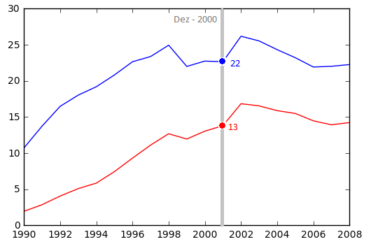

Visualização de Dados 2017.2 Lista de Exercícios 2
Informações Gerais
O objetivo desta lista é praticar os conceitos vistos em sala e construir uma base de código que será possivelmente útil para o projeto da disciplina.
É recomendada a leitura dos capítulos 3 a 8 do livro Interactive Data Visualization for the Web e também o uso da documentação da Mozilla Developer Network.
Data de Entrega
A entrega deverá ser feita via GitHub até 09/09/2017 até 23:59. Veja as instruções para entrega no Google Classroom.
Problema 1
Em visualizações que apresentam eixos que representam escalas com domínios bastante espaçados, muitas vezes identificar a localização de um ponto no domínio da escala. Para solucionar este problema, é comum usar interação para ajudar usuários a "se encontrar" no gráfico. Vamos exercitar este contecito neste problema.
Para tanto, incremente o exercício 3 da lista 1 implemente o auxílio de localização com uma linha vertical que se move com o mouse. Ao lado desta linha deve ser escrito o tempo correspondente a linha no formato Mês-Ano (por exemplo, Jul 2000). Além disso, a intersecção da linha com as duas retas deve ser indicada com pontos e com o valor do eixo y correspondente, como na figura abaixo.

A resposta deste arquivo deve ser elaborada em dois arquivos, problema1.html e problema1.js.
Problema 2
Para a solução deste problema, crie um arquivo
problema2.html e outro chamado
problema2.js. Neste problema, implementaremos uma
scatterplot matrix para visualizar o famoso dataset multidimensional
cars. Em cada scatterplot da matriz, os pontos devem estar coloridos de acordo com a coluna cylinders (uma cor diferente para cada valor nesta coluna. Este
link contém algumas definições sobre esquemas de cores. Use um dos esquemas de cores qualitativos contida
aqui). Além disso, cada scatterplot deve suportar operações de brushing (pontos fora da região de brushing devem ser tornados transparentes ou mostrados com menos evidência). Os brushes devem ser coordenados, isto é, a seleção de um scatterplot deve evidenciar os pontos correspondentes nos outros. Quando o usuário iniciar o brush em um dos plots, qualquer brush ativo deve ser apagado, isto é, somente um brush deve ser permitido na scatterplot matrix.
Problema 3
Para a solução deste problema, crie um arquivo
problema3.html e outro chamado
problema3.js. Neste problema, o nosso objetivo é criar uma visualização composta vistas múltiplas, cada vista sendo um gráfico de linha, como na questão 3 da lista 1. Para este problema, use o
conjundo de dados de taxa de óbito de AIDS para cada estado da região nordeste. Os plots devem estar coordenados para intereções de zoom e pan, isto é, se o usuário fizer uma operação de zoom/pan em um dos gráficos, todos os outros devem sofrer a mesma operação.